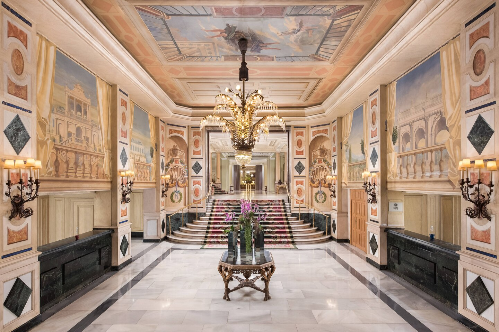
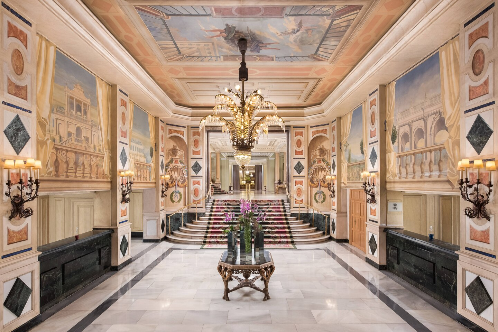

Alojamiento
Descripción del alojamiento
El Westin Palace en Madrid es uno de los hoteles más lujosos de la capital. Este dispone de 5 estrellas y un servicio excelente para que tu experiencia en el festival sea increíble.Si desea consultar precios, disponibilidad, servicios que ofrece... puede visitar esta página.
 



Lugar de celebración
Descripción del lugar de celebración
El Wizink Center: lugar donde se celebra nuestro mítica ceremonia de premios es ya todo un clásico... Este espacio multicultural es un referente a la hora de celebrar todo tipo de eventos: conciertos, partidos de baloncesto...Si desea consultar los horarios de entrada al mismo, puede visitar esta página.
Medios de Transporte
Descripción de medios de transporte
A continuación mostramos un mapa con las indicaciones en coche para llegar desde el hotel Westein Palace hasta el Wizink Center.Si desea consultar líneas de metro, puede visitar esta página.
En otro caso, si desea consultar los autobuses, clica aquí.